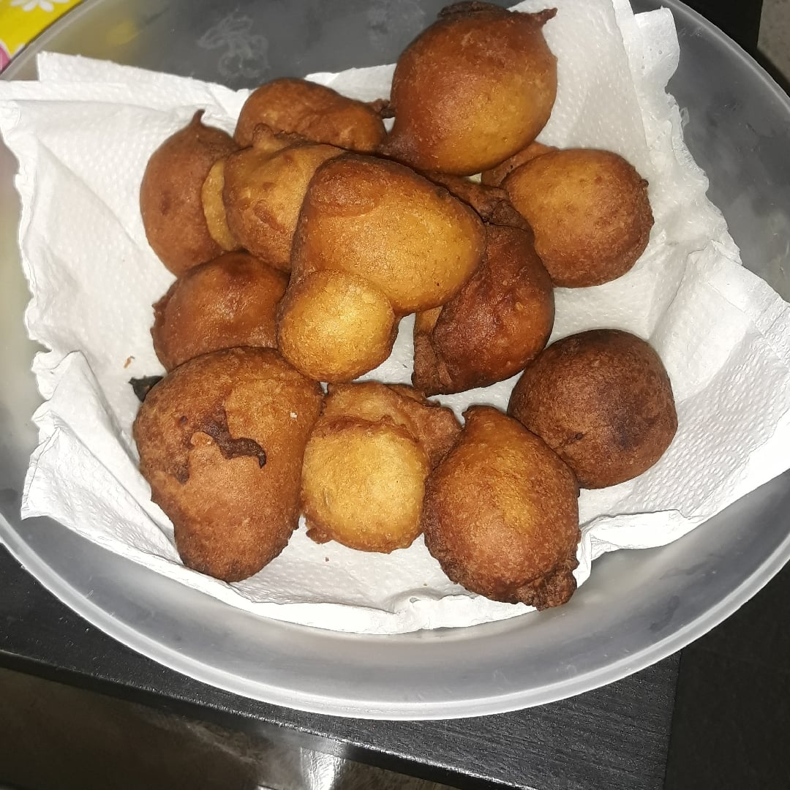

Bolinho de Chuva

Bolinho de Chuva translates roughly as “rain scone”. It is made from flour, eggs, milk and baking powder or baking soda. The name refers to the raindrop shape the batter makes when it hits the oil and to the idea that it is a good rainy day project to make the dish.
Ingredients
- 3 cups of self-rising wheat flour;
- 2 eggs;
- 1 cup of milk;
- 1 cup of sugar;
- Oil.
Steps
- In a bowl add the eggs, milk, sugar and beat with a fork;
- Then add the self-rising wheat flour little by little and mix well;
- Then just fry in hot oil;